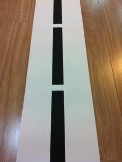
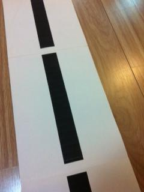
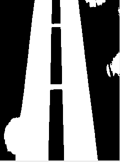
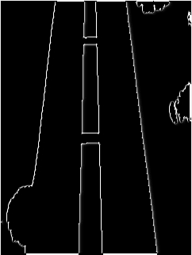
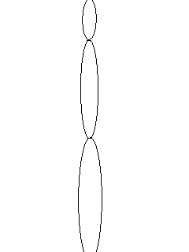
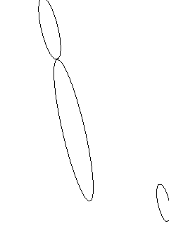

Line detection | Angle detection with Java
I'm processing some images that my UGV (Unmanned Ground Vehichle) captures to make it move on a line.
I want to get the angle of that line based on the horizon. I'll try to explain with a few examples:

The image above would make my UGV to keep straight ahead, as the angle is about 90 degrees. But the following would make it turn left, as the angle compaired to the horizon rounds about 120.

I could successfully transform those images into the image below using otsu for thresholding:

And also used an edge detection algorithm to get this:

But I'm stuck right now trying to find an algorithm that detecs those edges/lines and outputs - or helps me to output - the angle of such line..
Answer
Here's my attempt using ImageJ:
// Open the Image ImagePlus image = new ImagePlus(filename); // Make the Image 8 bit IJ.run(image, "8-bit", ""); // Apply a Threshold (0 - 50) ByteProcessor tempBP = (ByteProcessor)image.getProcessor(); tempBP.setThreshold(0, 50, 0); IJ.run(image, "Convert to Mask", ""); // Analyze the Particles ParticleAnalyzer pa = new ParticleAnalyzer( ParticleAnalyzer.SHOW_MASKS + ParticleAnalyzer.IN_SITU_SHOW, 1023 + ParticleAnalyzer.ELLIPSE , rt, 0.0, 999999999, 0, 0.5); IJ.run(image, "Set Measurements...", "bounding fit redirect=None decimal=3"); pa.analyze(image); int k = 0; double maxSize = -1; for (int i = 0; i < rt.getCounter(); i ++) { // Determine creteria for best oval. // The major axis should be much longer than the minor axis. // let k = best oval } double bx = rt.getValue("BX", k); double by = rt.getValue("BY", k); double width = rt.getValue("Width", k); double height = rt.getValue("Height", k); // Your angle: double angle = rt.getValue("Angle", k); double majorAxis = rt.getValue("Major", k); double minorAxis = rt.getValue("Minor", k);
How the code works:
- Make the image grayscaled.
- Apply a threshold on it to only get the dark areas. This assumes the lines will always be near black.
- Apply a Particle Analyzer to find Ellipses on the image.
- Loop through the "Particles" to find ones that fit our criteria.
- Get the angle from our Particle.
Here's an example of what the image looks like when I analyze it:

NOTE : The code is untested. I just converted what I did in the Visual ImageJ into Java.